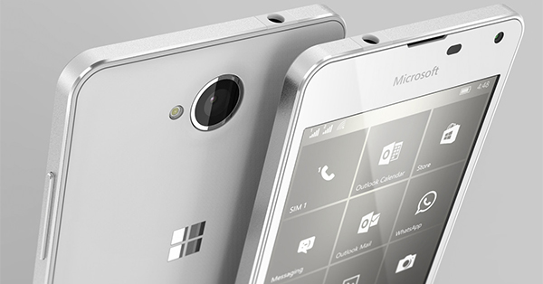

แม้ว่าเจ้าพ่อยักษ์ใหญ่ในวงการไอทีอย่าง Microsoft กำลังจะหมดสัญญากับ Nokia ในช่วงปลายปีนี้ และไม่ได้พัฒนาสมาร์ทโฟนในตระกูล Lumia ต่ออีกแล้ว แต่ทางบริษัทจะหันไปผลิตสมาร์ทโฟนในค่ายเป็นของตนเอง ซึ่งหากใครที่ติดตามข่าวสารกันมาบ้างคงจะเคยได้ยินชื่อ Surface Phone ว่าที่สมาร์ทโฟนระดับพรีเมียมของ Microsoft กันมาบ้าง ซึ่งล่าสุดก็มีข้อมูลใหม่เกี่ยวกับ Surface Phone หลุดออกมาให้ทราบกันเพิ่มเติมแล้ว
นายสืบวงศ์ แก้วสีดำ ปวส.2/1 เลขที่ 25